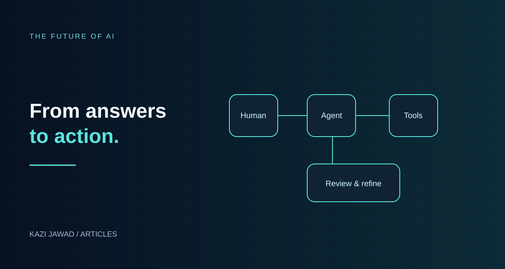

Articles / 01 · Artificial Intelligence
The Future of AI: From Chatbots to a Digital Workforce
How AI agents could reshape work, discovery, and opportunity.

In this article
Introduction
In January 2022, GPT-3 was considered the state of the art, and most people had never typed a sentence into an AI system. Less than five years later, AI writes code, drafts legal documents, analyzes medical images, books travel, and increasingly carries out multi-step work on its own. The question is no longer "Is AI real?" but "How far, how fast, and who benefits?"
This article looks at where AI stands today, the forces shaping its next phase, the risks that could slow or derail it, and what individuals, businesses and countries (including developing economies such as Bangladesh) can do to prepare.
1. Where AI Stands Today
1.1 From assistant to agent
The biggest shift of 2025–2026 is the move from AI that answers to AI that acts. Early chatbots waited for a question and produced a reply. Today's AI agents can plan a task, use software tools, check their own work and keep going for long stretches without step-by-step instruction.
Industry forecasts reflect this. In an August 2025 forecast, Gartner projected that 40% of enterprise applications would include task-specific AI agents by the end of 2026, up from under 5% in 2025. This is a forecast, not a measured adoption result. Gartner announcement. Commentators such as Tomasz Tunguz have predicted agents that can handle workstreams lasting eight hours or more. Microsoft's leadership has talked about every organization having "teams of AI agents."
A fair caution: many of these figures are forecasts from vendors and analysts who have a stake in adoption. Treat them as direction of travel, not guaranteed outcomes.
1.2 Multimodal and always-on
Modern systems read text, images, audio and video together. Real-time voice and video interaction is becoming normal, which makes AI far more natural to use for people who are not comfortable typing, an important point for countries with many languages and varied literacy levels.
1.3 Orchestrated teams
Rather than one giant general-purpose model doing everything, companies are building multi-agent systems: an "orchestrator" agent that splits a job and hands pieces to specialist agents (finance, IT, marketing, legal), much like departments in a company. Gartner lists multi-agent systems among its top strategic trends for 2026.
2. Five Forces Shaping the Next Five Years
Force 1: Agents become coworkers
The working model is shifting from "human uses software" to "human supervises agents that use software." Cisco and Microsoft have described this as an era of "connected intelligence." New roles are appearing: agent supervisors (who set goals and review results) and agent developers (who build and tune them). Developers themselves are moving from writing every line of code toward directing and checking AI-generated work.
Force 2: Physical AI
AI is leaving the screen. Humanoid and other robots are being piloted in factories, warehouses and airports, with new AI models giving them better dexterity and adaptability. (See the companion article on robots and jobs.) This is where "AI" meets the physical economy: manufacturing, logistics, agriculture and construction.
Force 3: Scientific and medical discovery
AI is accelerating drug design, materials research, protein modeling and diagnostics. This is one of the clearest areas where AI adds capability rather than replacing workers: it lets small teams explore far more possibilities than before.
Force 4: Energy and infrastructure limits
Digital scale depends on physical power. Data centers need enormous electricity, cooling and chips. As one commentator put it, the future of digital scalability depends on physical power grids. Energy supply, chip supply and water use will cap how fast AI can grow, and will shape which countries lead.
Force 5: Regulation and trust
AI governance was developing before 2026: the EU AI Act entered into force in August 2024, with obligations taking effect in stages. As agents gain autonomy, accountability, data protection, and transparency become increasingly practical questions. European Commission announcement. The World Economic Forum's 2026 Global Risks Report lists mis- and disinformation among the top short-term risks, and AI makes convincing fakes cheaper than ever.
3. The Economic Picture
Productivity gains are real, but uneven
Surveys report that workers who use AI tools feel more productive, and companies report time savings on routine tasks. But only a minority of firms have scaled agents beyond pilots in any single function; most are still early.
Who is exposed?
A counter-intuitive finding from several analyses: AI exposure is often highest in well-paid, information-processing jobs (analysis, writing, coding, customer support), not just low-wage manual work. PwC’s 2025 analysis found that skills listed in job advertisements changed 66% faster in occupations most exposed to AI than in those least exposed. The comparison covers skill changes during 2019–2024; it is not a 2026 measurement. PwC Global AI Jobs Barometer, page 15. Entry-level white-collar roles are a particular concern: Geoffrey Hinton and others have warned of a "jobless boom," where output grows while hiring of junior staff stalls.
Winners and losers
- Likely winners: people who combine domain expertise with AI fluency; small businesses that can now do what once needed a large team; countries with cheap energy and strong education pipelines.
- Likely strugglers: workers whose jobs are mostly routine text or data processing and who do not get retraining; companies that adopt AI without redesigning how work is done.
4. Risks That Could Change the Trajectory
- Concentration of power. A handful of firms control the most capable models and the compute behind them.
- Misinformation and fraud. Cheap voice cloning, deepfakes and automated scams.
- Over-reliance and skill atrophy. If people stop practicing writing, analysis and judgment, they lose the ability to catch AI's errors.
- Reliability. Agents still make mistakes, sometimes confidently. High-stakes use (medicine, law, finance) needs human review.
- Bubble risk. If AI results disappoint relative to the investment, funding could contract sharply and companies cut jobs to survive, a scenario some analysts explicitly warn about.
- Security. Agents with access to tools and data become new targets for attackers.
5. Scenarios to 2030
The World Economic Forum's Four Futures for Jobs work emphasizes that the outcome is not predetermined; it depends on choices about training, regulation and how work is organized. The table below presents my illustrative scenarios, informed by that debate; these are not the names or categories used in the WEF framework:
| Scenario | What happens | What decides it |
|---|---|---|
| Augmentation | AI handles routine tasks; most workers move to supervising, judging and relationship-heavy work | Widespread, affordable reskilling |
| Polarization | Gains go to a skilled minority and capital owners; middle-tier jobs thin out | Weak training systems, concentrated ownership |
| Stall | Reliability or cost problems slow adoption; hype cools | Technical limits, energy costs, investor patience |
| Fast disruption | Agents replace large categories of work quickly | Rapid capability jumps, little policy preparation |
Reality will likely be a mixture that varies by industry and country.
6. What to Do: A Practical Playbook
For individuals
- Learn to work with AI daily. AI fluency is heading toward being a baseline expectation, like computer literacy in the 1990s.
- Build judgment and domain depth. The more you understand a field, the better you can direct AI and spot its errors.
- Develop human-centered skills: negotiation, leadership, empathy, ethics, hands-on trades.
- Document your work. Turn your repeatable tasks into clear instructions; those become the prompts and workflows that multiply your output.
For businesses
- Start with a specific, measurable workflow (invoice processing, customer replies, reporting), not "AI everywhere."
- Keep a human in the loop for decisions with legal, financial or safety consequences.
- Redesign the process, not just add a tool on top of the old one.
- Invest in upskilling alongside automation.
For policymakers and educators
- Teach AI literacy and critical thinking in schools and universities.
- Fund reskilling programs, especially for mid-career workers.
- Set clear rules on transparency, liability and data protection without blocking small innovators.
- Plan energy and connectivity infrastructure.
For developing economies
Countries with large young populations, such as Bangladesh, face both risk and opportunity. Risk: outsourcing and routine back-office work (call centers, basic data entry, simple coding) are exposed to automation. Opportunity: AI lowers the barrier for local entrepreneurs, enables services in local languages, and lets small teams compete globally, provided education and digital infrastructure keep pace.
Conclusion
The future of AI is best understood not as a single event ("the day AI takes over") but as a steady shift in who does what: machines taking on more execution, humans moving toward direction, judgment and accountability. The technology is advancing quickly, but its impact on society will be determined by decisions people make now about education, regulation, ownership and how to share the gains.
The people best placed for this future are not those who fear AI or those who trust it blindly, but those who learn to use it well and keep their own judgment sharp.
Sources and Notes
The scenarios above are illustrative, and adoption figures described as forecasts are not measured outcomes. Primary references for the headline statistics and frameworks include:
- Gartner: forecast for task-specific agents in enterprise apps.
- PwC: 2025 Global AI Jobs Barometer.
- World Economic Forum: four ways AI could affect job markets.
- European Commission: AI Act enters into force.
The practical suggestions and four illustrative scenarios are the author’s interpretation, rather than promises about how any specific business or career will develop.